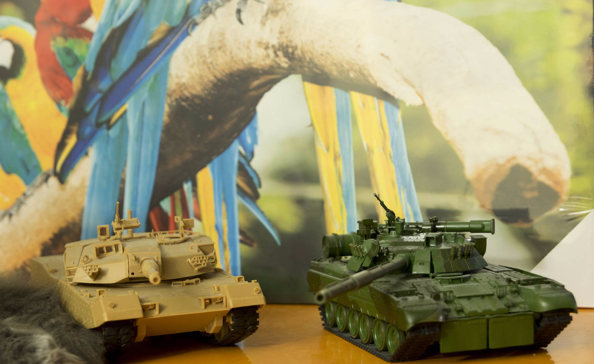
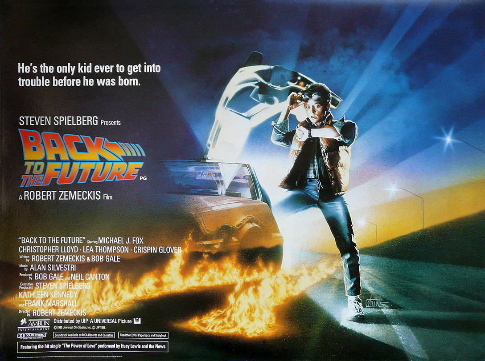

I love meeting international students. Whatever your goal is for yourself in English, I will work with you on a plan to get you there! I continually strive to help you learn English and to become your best tutor!
I have been involved with ISMC International Student Ministries Canada organization for over 10 years. They assist students with English studies, Bible studies and friendship and advice. Throughout this time I have provided support to students by being their friend, practicing conversational English with them, correcting essays and homework. I am very a friendly and responsible individual and love to help people. I would be happy to help you learn English, give advice or provide other support.
The things I like:

Building models
When I was a child, I played with lego. When I was a teenager, I built models. When I became an adult, I built computers, repaired cellphones and game consoles, but I never stopped loving building models. I am interested in all kinds of models: Cars, trucks, tanks, helicopters, ships, etc.

Watching movies
My favourite genres of movies are sci-fi, Hong Kong martial arts and action. I also love comedy, romance and fantasy genres.
Photography
I use Olympus OM-D E-M1 Mirrorless camera, equipped with Panasonic Lumix G 25mm F1.7 and Olympus ZUIKO DIGITAL ED 50-200mm F2.8-3.5 lenses. I am an enthusiast photographer and like to shoot friends, parks, flowers, birds and animals in their natural habitat.